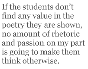

In the not so distant past Poetry had a high status. No one questioned its importance or its rewards. Not in the classroom at least. One simply got down to studying how it worked. Nowadays, it’s not enough for the teacher to insist that poetry is important and rewarding; I have to be able to explain why it’s important and rewarding. This is no bad thing, in my view, not least because it challenges what I previously took for granted.
So, why is poetry important and rewarding? In my practice, I’ve learnt to divide the reasons into two categories: a) what I can’t explain (so I won’t try), and b) what I can explain.
It’s no use being evangelical about poetry. The majority of my first-year students — 16-year-olds at the equivalent of a high school in Denmark — perceive poetry as a difficult, namby-pamby domain that is peripheral to real life. In other words, most of my students are not ripe for conversion as in Dead Poets Society. Likewise, I find that my own emotional and aesthetic inclinations to poetry are best kept up my sleeve. If the students don’t find any value in the poetry they are shown, no amount of rhetoric and passion on my part is going to make them think otherwise.
The vast majority of my students find it difficult to talk about language, register and tone in good modern prose, and this is mainly due to their inability to identify its poetical elements, which in turn is due to a cultivated horror of close reading. It is the subduing of this horror, the insistence that close reading is important and rewarding, that is the key to convincing students that poetry is too. Before tackling poetry with them, I conduct close readings of some quite easy but very well-written short stories — e.g. from Ian McEwan’s The Daydreamer (Vintage, 1994) — and help them find poetical features such as metaphor, simile, oxymoron, personification, onomatopoeia, alliteration, etc. Thus I have introduced the arsenal of poetical tropes before presenting them with any poems. They may subsequently be astonished at how sparingly these tropes are employed in contemporary poetry.
Choosing Suitable Material
I have seven criteria for choosing suitable material: simple, short, fun, important, occasional/political, sociolinguistic, contemporary.
— Simple
First of all, poetry must be demystified. It doesn’t have to be airy-fairy stuff that no one understands. It is, in fact, very often a form of communication by a real, live human being who has chosen to compose a poem in preference to other forms of communication.
It is best to present students with simple poems at first. By this I mean poems that are easily understood. They must never be banal. Unless I have an especially bright class, I also tend to steer clear of poetry with rhyme and regular meter, which is a complicating factor. Those of my students who have an interest in English poetry seem to think that it always rhymes, so this is a way of dispelling their illusions.
— Short
Again, this often tends to make a poem more easily digestible. A poem of more than thirty lines is inadvisable in an introductory course, and fewer than twenty lines is a good general guideline — unless, of course, the lines are very short.
— Fun
Children enjoy poetry because it appeals to their sense of play. Young adults find poetry difficult because they’ve been taught not to play in the classroom. Ergo, they have to be allowed to play in the classroom once more. This in itself isn’t very hard to achieve, as young adults love being allowed to play. The hard part is convincing them to take things seriously again afterwards. But just because something is fun doesn’t mean it’s unimportant. However, I doubt I will ever again start with a course in rock lyrics. The students that benefitted from it were already enthusiasts, while the rest were merely confirmed in their belief that poetry is secondary to other art forms. I could never subsequently persuade them that poetry is not necessarily something that is hopelessly shackled to song.
— Important
By this I mean a poem that is strong, original and instructive.
— Occasional/political
People are automatically receptive to poetry about an event they are familiar with. Protest poetry is also accessible. Love poetry too. The structure of such poetry is often fairly easy to analyze, as is the rhetoric. Walt Whitman’s “O Captain, My Captain” (1865) is a good example, but my students won’t find it interesting unless they study it in context, i.e. while studying the American Civil War.
— Sociolinguistic
Poetry that records a way of speaking (and thereby often a way of thinking and living) that is different to the norm can be difficult, but it can also be accessible inasmuch as it directly asks us to shift our perspective, which is an important aspect of poetry in general..
— Contemporary
This doesn’t necessarily mean poetry written within the last ten years. Poetry often has a longer contemporary span than other genres. Let’s say within the last fifty years perhaps. It is a good idea though to use several poems by poets who are still alive. That said, poems by poets who died more than fifty years ago might be fine if these meet some of the other criteria.
Haiku
Haiku are certainly short, and often they are simple and fun. Notoriously non-poetic from a traditional Western viewpoint, haiku avoids rhyme, metre and all flowery language. Thus working with haiku is ideal for ridding students of preconceptions about what poetry must be. Here they can learn how to:
a) write concretely instead of abstractly,
b) show not tell (i.e. create a scene),
c) avoid clichés.
Here too they are taught to pay attention to important details such as individual word choices and punctuation. Moreover, haiku appear to be so simple to write that students are not afraid to write their own, even though writing a good haiku is, in fact, rather difficult. This is instructive too, as the students learn that writing good poetry is hard work.
After introducing the students to the form and its originator, Master Basho, I present them with a whole batch of haiku and ask them to choose their favourite. They invariably find the most beautiful ones, typically those with images that have hit upon universal oppositions.
There is a lot of good material on the Internet about haiku, and the best way to present them is to assemble your own material. World Haiku Review is a fantastic resource (http://www.worldhaikureview.org/). One of my favourite pieces, “Clutter and Credibility” gives examples of poor haiku, explains what is wrong with them, and suggests how they can be improved.
Inspired by Haiku
Haiku is not a closed world. After doing a course on haiku I present poems that owe a significant debt to haiku but are not, strictly speaking, haiku. Here is one we all know — by Ezra Pound and originally published in Poetry in 1913:
In a Station of the Metro
The apparition of these faces in the crowd;
Petals on a wet, black bough.
This version of the poem is an edited version. The original version reads:
The apparition of these faces in the crowd:
Petals, on a wet, black bough.
And here I will quote William J. Higginson’s The Haiku Handbook (Kodansha International, 1987, p.135):
Most readers notice the absence of the comma after the word “petals”. More important, at the end of the first line Pound changed the colon to a semicolon. A colon tells the reader that one thing restates another in a different way, or that the first simply introduces the second, making one a metaphor for the other. A semicolon shows that two statements are independent of each other, though they may be related. Thus in the final version both “faces” and “petals” should be understood as real, physical objects, each a core image that stands out against its own background. By revising the poem Pound turned an otherwise sentimental metaphor into a genuine haiku.
That a piece can be turned from a “sentimental metaphor into a genuine haiku” merely by fixing the punctuation is quite a revelation to my students, who themselves have a tendency to sprinkle the stuff fairly liberally — or not, as the case might be.
My next example of a haiku-like poem is by E.E. Cummings (1958). It’s a purely visual poem, i.e. it cannot be read aloud.
l(a
le
af
fa
ll
s)
one
l
iness
This is one that intrigues students — after they have recovered from their initial alienation. But the visual description is not what is ground-breaking in this poem; what makes it so innovative is that whereas poems normally present images one at a time, here two separate images are presented simultaneously. If the order of the words had been: “a leaf falls (loneliness)” or “loneliness (a leaf falls)”, then the effect of loneliness being experienced at the moment the leaf falls would be lost. What Cummings manages to express here is what is called a “haiku moment”, the vivid experience of a moment expressed in a haiku.
Finally, here is a haiku-like poem that is both a visual poem and a poem to be read aloud:
children’s
book
sh
elves
This poem is by Michael Dylan Welch, and was originally published in Brussels Sprout (Vol. VIII, No. 2, May 1991). Just twenty letters long, this assembly of three everyday words is enough to send me six hundred miles away and forty years back in time.
What Is a Poem Anyway?
Many contemporary poems often appear to be chopped-up prose. It is therefore worthwhile to study what makes a poem a poem. At the outset of Now Read on: A Course in Multicultural Reading by John McRae and Malachi Vethamani (Routledge, 1999) there is an exercise where a poem by William Carlos Williams, “This Is Just to Say” (1934), is presented as prose:
This is just to say I have eaten the plums that were in the icebox and which you were probably saving for breakfast. Forgive me — they were delicious, so sweet and so cold.
Ask the students to consider this piece and then discuss it with them. Ask them what it is and in what situation it might have been applied, and then ask them to guess who the author is — man/woman, young/old, married/unmarried, etc. — and who its recipient is. They will probably quite quickly see the humour in it, inasmuch as the author’s apology is at odds with his/her bright impenitence. Finally, ask them whether there is anything unusual about the language. There may well be a student who says that ‘icebox’ is an American expression. More exactly, it’s a dated expression. But what you’re really fishing for is the heightened speech of “so sweet and
so cold”, where “so sweet and cold” would have sufficed, and something like “really sweet and cold” would have been in a more everyday register. Ask them what kind of language this is, and someone might answer “poetical” — especially if they’ve just been studying haiku for three weeks! Then ask the students to rewrite the piece so that it looks like a poem without changing the order of the words and without adding or deleting a single word.
Many students will see two stanzas, starting the second one on “Forgive”, but very few will have as many as three stanzas and the twelve lines of the original:
This Is Just to Say
I have eaten
the plums
that were in
the icebox
and which
you were probably
saving
for breakfast
Forgive me
they were delicious
so sweet
and so cold
Students are interested to see that the title figures as part of the poem itself, and that there is a total absence of punctuation — note, however, the capital ‘F’ at the start of the third stanza.
Occasional/Political/Sociolinguistic
When Carlos Williams was asked — by John W. Gerber in 1950 — what makes this a poem, as it is the kind of thing that anyone might say, his initial response was: “It is metrically absolutely regular.” Which is hardly the case. But he then added that people do not believe that poetry can exist “in their own life”. Just as Carlos Williams deliberately used the language spoken by Americans, so it is enormously important for young people to learn that they can write poems using their own language, and that poetry can be written from their own lives, their own everyday experiences.
Tom Leonard has done a rewrite of this piece:
Jist ti Let Yi No
(from the American of Carlos Williams)
ahv drank
thi speshlz
that wurrin
the frij
n thit
yiwurr probbli
hodn back
furthi parti
awright
they wur great
thaht stroang
thaht cawld
(from Intimate Voices: Poems 1965-1983. Etruscan Books, 1984)
I’ll readily admit I choose to use Leonard because I myself grew up just outside Glasgow. But, even so, I think everyone can have some fun with this. It certainly illustrates how important an understanding of the social context is. Don’t be deceived by “thi speshlz”. They’re a certain brand of beer, not an extra-strong beer. When I reach “awright”, my students can’t help but laugh. They’re surprised how much drawl and emphasis I put on “-right” when it’s not marked in any way on the page.
There are plenty of good questions to be asked here. Why did Leonard write this poem? How might Carlos Williams have reacted? Tell the students Carlos Williams died in 1963, and that Leonard wrote this poem in the mid-70s. Ask them how that might affect our view of the poem. Ask your students which poem they prefer and why. Get the students to translate Leonard’s poem to Standard English, and again ask them which version they prefer.
These two poems are far from being just frivolous fridge poems: they are in fact important political and sociological statements. Leonard is very articulate about this. See, for example, http://www.tomleonard.co.uk/sixoclock.shtml for an extract from his essay, “The Proof of the Mince Pie” (1973) and the opening of his essay on Carlos Williams, “The Locust Tree in Flower, and why it had difficulty flowering in Britain” (1976). Here too we can hear the poet reading his most famous poem to date, “Unrelated Incidents, no. 3”, more popularly known as “Thi Six a Clock News”.
My favourite piece of Leonard’s:
A Scream
yi mist yirsell so yi did
we aw skiptwirr ferz njumptaffit thi lights
YIZIR AW PINE THEY FERZ THIMORRA
o it wizza scream
thaht big shite wiz dayniz nut
tellnyi jean
we wirraw shoutn backit im
rrose shoutit shi widny puhllit furra penshin
o yi shooda seeniz face
hi didny no wherrty look
thing iz tay
thirz nay skool thimorra
thi daft kunt wullny even getiz bluddy ferz
(from “Six Glasgow Poems”, 1969, from Intimate Voices: Poems 1965-1983)
I ask my students to do a Standard English translation of this. In line 3 “YIZIR” actually stands for “YOUS ARE” — note how the plural form of “you” exists in Glaswegian; the expression, “she wouldn’t pull it for a pension”, means: “she wouldn’t offer him sexual favours for all the money in the world”; in lines 3 & 12 “thimorra” is the equivalent of “the morrow” rather than “tomorrow”, although it means the same thing; “willny” in line 13 is the equivalent of “will no”, i.e. “will not”.
A Scream
you missed yourselves so you did
we all skipped with our fares and jumped off at the lights
YOU’RE ALL PAYING THOSE FARES TOMORROW
oh it was a scream
that big shite was doing his nut
I’m telling you Jean
we were all shouting back at him
Rose shouted she wouldn’t pull it for a pension
oh you should have seen his face
he didn’t know where to look
the thing is too
there’s no school tomorrow
the daft cunt won’t even get his bloody fares
This version is also quite fun to read aloud in a posh English accent.
In an interview with Variant in 1998 Tom Leonard talks about how state institutions often seek to control the critical dialogue taking place between the people and the state, and he notes: “The mass newspapers and endless media news bulletins are as much about marketing a specific sense of phatic communion as about information. Which doesn’t generate dissent or critical dialogue. Phatic communion comforts people. You watch the game then go home to read about it.” To read his subsequent defintion of what phatic communion is, see http://www.variant.randomstate.org/5texts/Dan_Stephen.html.
Likewise, Leonard sees poetry as providing an antidote to preconceived notions, and this is a facet of poetry that can appeal to many bright youngsters. From reading Leonard’s poetry and being introduced to his views, the students will hopefully see that poetry is a medium that addresses some fascinating political and cultural issues in its own right.
From here it’s a short step to studying other poets with multicultural backgrounds.
A Couple of Final Thoughts
Including a fair amount of poetry in my teaching comes naturally to me as I write it myself, but since it is so marginalised nowadays, poetry ought to be given a special place in the agenda of any teacher of language and literature — at every level of teaching; we should always be on the lookout for good poems that can be used to supplement the courses we teach.
One may also have to resort to cunning ploys in order to wangle some goodwill towards a course that has a specific bias towards poetry. For example, towards the end of a course about gender roles I sometimes show students the film G.I. Jane, where it transpires — in a remarkable turnaround, and almost as the point of the whole film — that the character played by Viggo Mortensen (a Dane!) has made a motto out of Lawrence’s poem “Self-Pity” from Pansies: Poems (Martin Secker, 1929):
I never saw a wild thing
sorry for itself.
A small bird will drop frozen dead from a bough
without ever having felt sorry for itself.
Now THAT impresses the students. I show them the acrostics (I SAW) and later can present them with further examples of acrostic verse. And now I have a pretext for suggesting we study Lawrence’s poetry, prose and politics.
Duncan Gillies MacLaurin was born in Glasgow in 1962, sent to boarding school in Perthshire, and awarded an exhibition in Classics to Oxford. He left without his degree, and after a short spell at London University he spent two years busking in the streets of Europe. In 1986 he met Danish journalist and writer, Ann Bilde, in Italy and went to live in Denmark. He took degrees in English and Latin at Aarhus University and since 1995 has taught at a high school in Esbjerg.